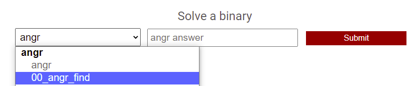
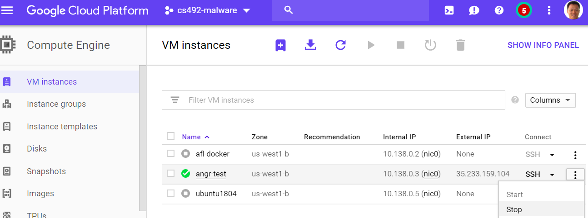

Symbolic execution is an essential tool in modern program analysis and vulnerability discovery. The technique is used to both find and fix vulnerabilities as well as to identify and exploit them. In order to ensure that symbolic execution tools are used more for the former, rather than the latter, you will be tackling a set of scaffolded, polymorphic, ``capture-the-flag'' (CTF) exercises based on the open-source symbolic execution framework angr.
us-west1-bLog into the instance and install the necessary Python and run-time packages.
sudo apt update -y sudo apt install -y virtualenv unzip python3 python3-pip gcc-multilib gdb radare2
angr and download angr CTF binariesCreate a directory for the CTF binaries and then set up and activate a Python virtual environment in it.
mkdir angr_ctf cd angr_ctf virtualenv -p python3 env source env/bin/activate
Install the necessary Python packages in the environment including angr~=9.2.
pip install requests bs4 angr~=9.2
Then, download the Python script and use it to download the angr CTF binaries located at https://angr.oregonctf.org. You will need to fill in your
wget http://thefengs.com/wuchang/courses/cs492/meta_dl.py python meta_dl.py angr.oregonctf.org <username> <password> unzip angr.zip
In the angr_ctf directory, copy each scaffoldXX.py file into solveXX.py
for i in scaffold* do cp $i $(echo $i | sed 's/scaffold/solve/') done
For each CTF level, you will edit solveXX.py with your solution for the level XX_angr_YY. For example, to solve the first level 00_angr_find, after modifying solve00.py, you would then run it:
$ python solve00.py
which might result in the following output:
$ python solve00.py JSFCFQFH $ ./00_angr_find Enter the password: JSFCFQFH Good Job. $
To obtain credit for your solution, you will need to visit the CTF site and submit it.
00_angr_find), then fill out answer and "Submit"
When you are done solving levels, exit the session and stop the VM to save $.
